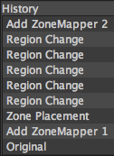

 The History tab shows you the complete history of all the edits you have made to your photo since opening it for the current editing session.
Additionally, you can select any edit within the history to go back to that point in time. This is the same as selecting Edit > Undo multiple times.